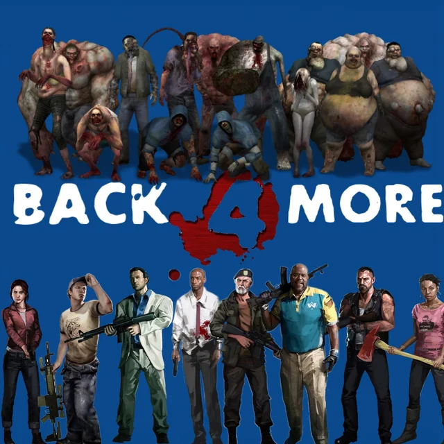

Wiki Oficial de Left 4 Dead 2
Bienvenido a la enciclopedia definitiva de supervivencia del aclamado juego de disparos cooperativo en primera persona desarrollado por Valve. Ambientado en las sombrías secuelas de una pandemia mundial desatada por el patógeno conocido como la «Gripe Verde», este mundo pone a prueba los límites de la resistencia humana, el trabajo en equipo y la estrategia táctica.
A través de esta página web, podrás explorar de forma detallada e interconectada todo lo necesario para dominar el juego. Encontrarás un análisis profundo de las campañas y mapas que componen el viaje hacia el sur de los Estados Unidos, una guía exhaustiva del vasto arsenal disponible (desde armas de cuerpo a cuerpo letales hasta armamento militar de asalto), perfiles psicológicos y tácticos de los cuatro supervivientes inmunes, descripciones detalladas de los temibles infectados especiales, el uso táctico de los objetos arrojadizos y las peculiaridades de los zombis poco comunes que poseen habilidades defensivas únicas.

Notas y Curiosidades Generales
| Categoría | Detalle Técnico / Curiosidad |
|---|---|
| Motor Gráfico | Source Engine (actualizado con sistemas avanzados de desmembramiento y fluidos). |
| El Director (AI Director) | Sistema dinámico que ajusta la dificultad, spawns de objetos e infectados basándose en el rendimiento del equipo. |
| Lanzamiento | Noviembre de 2009, convirtiéndose instantáneamente en un referente de los juegos multijugador cooperativos. |